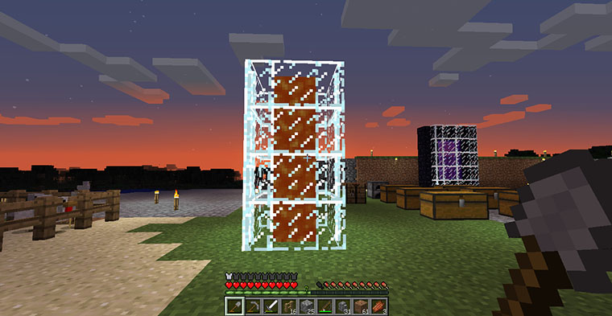

我的世界，你做主
我要带你去绿色生态园看风景
看高大的树木进幽谧的森林
坐在丛林里板凳上休息
我要带你去文化生态园看灯展
看炫丽的灯光拍好看的照片
站在熙攘的人群里说笑
我要带你去旅游
去任意的地方
只要和你在一起
去哪里都可以
我要和你一起参加活动
也许是好多人的聚会
也许是两个人的约会
虽然要去很多地方
但不是我开车
因为我不想开车
我要和你一起坐在车的后排
也许是别人的车
也许是自己的车
我想到过很多和你在一起的场景
比如一起奋斗
可能是准备一场考试
可能是寻找一份工作
可能是做一次失败的生意
比如一起购物
买两张周末的电影票
买两张回老家的车票
买新房子里装修用的瓷砖
比如一起无聊
你在房间里无所事事
我就看着你无所事事
和你在一起又怎么会无聊
好像我经历过的回忆中，都有你
最近天在下雨
变凉了
注意身体
也要注意安全
其实我没有想你
但我还是忍不住关心你
虽然我联系不到你
也没有你
欢迎来到我的世界。
入坑我的世界好多天，经历了各种生生死死，游戏一次又一次地安装卸载。
刚进入游戏，到了晚上会被僵尸杀死，被拿弓箭的白色僵尸射死，被蜘蛛咬死，被末影人打死，还遇见不知名的拿药水瓶的人，把你毒死。
自作孽的时候，被爬行者炸死，从高处掉到地上摔死，泡水里淹死，跑岩浆里被火烧死，饿死。
直到慢慢的，收集地上的泥土，垒起两格高的围墙，把自己围在中间，晚上就在里面等啊等，等到白天再继续活动。
随着圈起围墙的地盘越来越大，开始学会收集木块，然后知道了最最最最关键的一个步骤：用木块合成木板，这是一切一切的开始。
有了木板，就能有木棍，就能有工作台，就能有木锹、木槁、木锄、木剑，用木锹挖土，用木槁挖圆石，用木锄种小麦，用木剑打怪兽。
有了木槁，就能有圆石，就能有熔炉，就能有木炭，就能有火把，火把用来把自己的地盘照亮，照亮的地方就不会有僵尸出生了。
然后学会挖矿，铁矿、银矿、金矿、钻石矿，还有至关重要的黑曜石，并且用黑曜石搭建地狱门，可以进入地狱。
……
我的世界已近神作，自由度太高了，它是给真正体验游戏的玩家玩的游戏。
虽然时间不长。
我并没能完成在游戏里想要完成的操作，比如建一座城堡。

这个是我的圈地用的城墙，目前四个面只留了这么一个入口，一扇木门。原想在城堡的四周都开一个入口，这样每次回家都不用跑到这个面找这个门。

这个是改造中的城墙，原想把泥土搭的城墙全部换成圆石墙，地面全部换成圆石。可是我圈地比较大，没能来得及换完。

这只狗是在很远的森林里遇到，喂了两根骨头就从良的，一直跟在身边。遇到僵尸攻击的时候，小狗也会积极配合上前攻击。

这个长长的杵上天的柱子，是暂时用来当信号灯用的。如果离开城堡，到了旁边的森林，又不是特别远，有这根柱子，一眼就能看出城堡的方向。

这些是在城堡里圈养的动物，有羊、鸡、兔子、狗。游戏中只要喂这些动物食物，它们就会繁殖了，羊吃小麦，鸡吃小麦种子，兔子吃萝卜，狗吃肉。
在城堡里如果放一些水用来种小麦和萝卜，那这个城堡里的生态圈就可以无限循环啦！以前是有的，后来为了城堡里面的地面平坦一点，加上准备把泥土地面全换成圆石的，就先撤掉了。
这个东西，里面是岩浆，外面是一圈玻璃。仅仅只是为了好玩放在那儿，岩浆晚上会发光，也能起到一点照明的作用。

这些箱子就是用来放物品的地方。除了工作台和熔炉，有六个箱子。东西太多了，很难分类分清楚，有建筑石块、矿石、装饰块、食物、杂物、工具……

这个，就是地狱之门了。用十块黑曜石搭成的2x3的门，图中用玻璃把紫色的传送门挡住了，因为地狱里面的僵尸猎人太厉害，每次进去都被秒杀，把门堵住，防止自己误进，也防止门里面的僵尸猎人出来，还有偶尔小狗也会自己跳进去。
游戏里黑曜石很难天然形成，必须得自己，把水倒在岩浆上，然后用钻石镐挖。感觉钻石很难找。

这个留空的没有城墙的角落，是用来钓鱼的，而且很安全，僵尸们上不来，因为下面只铺了踩着的那一层，再下面就是悬空的了。

最后是一张不算全景照的全景照。其实地方蛮大的，还有不少能想到的想做的工作没做完。截图是在晚上，没能白天，也算是遗憾吧。
没做完，以后接着做？
单机游戏，实在不愿花费过多时间。
尽管和已经弃坑的王者荣耀比，我的世界用的时间一点都不多。王者荣耀，永远也不会有我的世界这么精彩的游戏内容。
而且要开学了，刚放假的时候，对学校还是很不陌生的感觉。
转眼暑假过去了。
很陌生。
现在想想，当时依旧是浑浑噩噩不知所以。
现在也依旧是浑浑噩噩不知所以。
平凡才是常态？
“连自己都找不到，还怎么找另一半？”
值得思考的，思考不出来的，思考出来做不到的，能做到但又不想做的，种种
拿起酒杯敬自己
敬明天
敬未来
未知的路才要前行